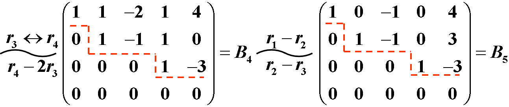
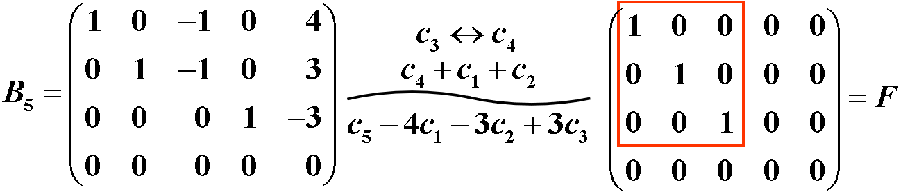
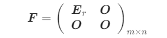
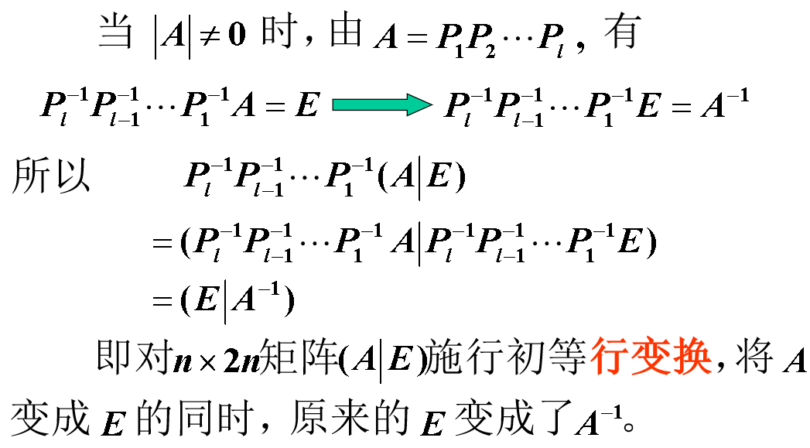
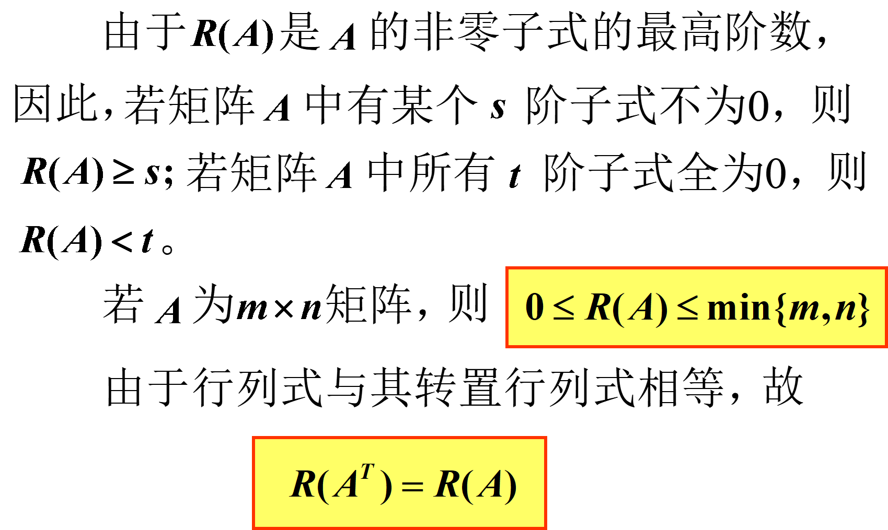
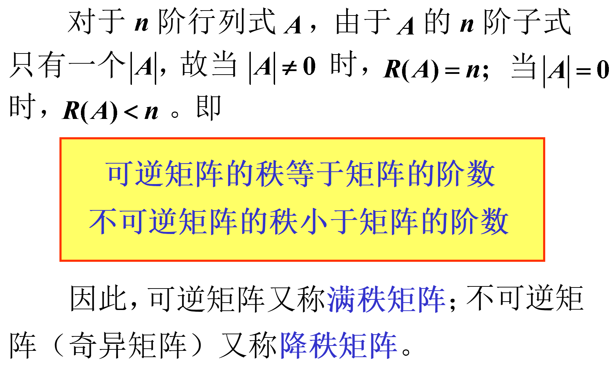
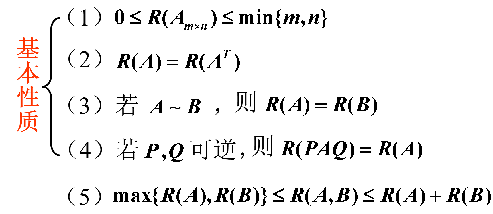
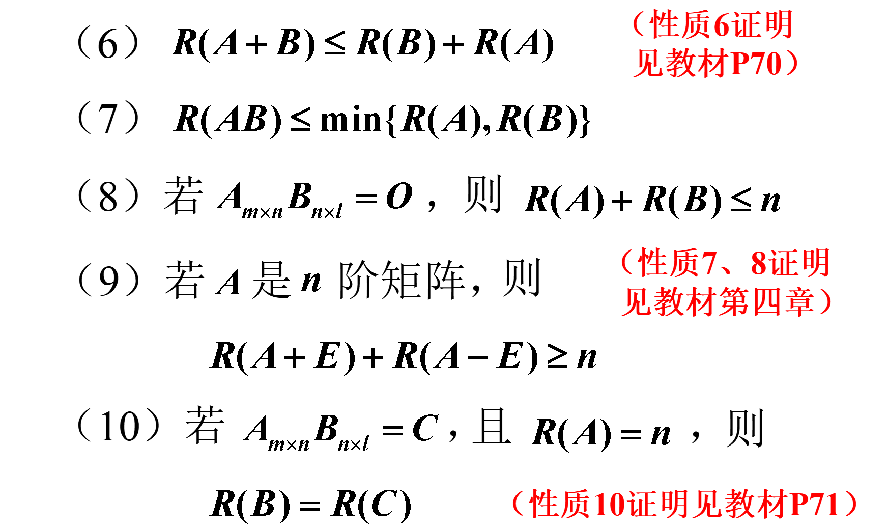
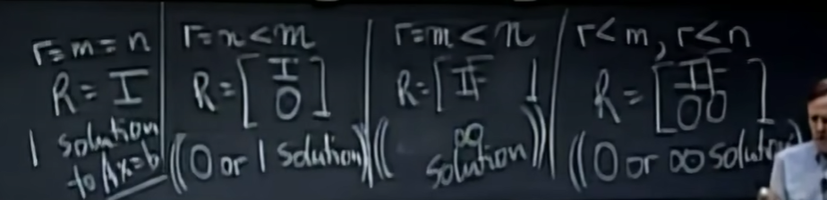
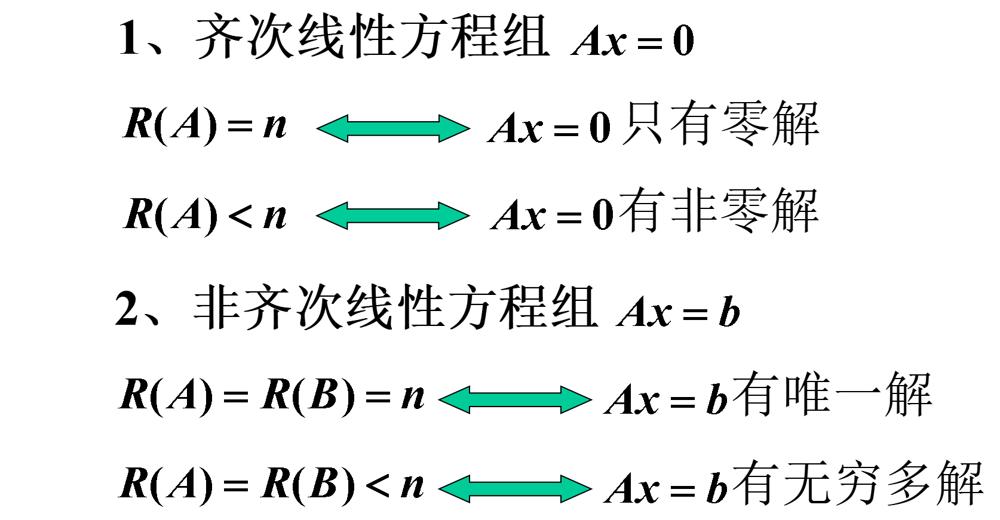

线性代数第3章：矩阵的初等变换与线性方程组
1 矩阵的初等变换
1.1 矩阵的初等变换
将解方程组的过程总结如下：
- 解方程组的方法称为消元法；
- 解方程组时，始终将方程看成一个整体变形，并且用到了如下三种变换
- 交换方程次序
- 以不为0的数乘某个方程
- 一个方程加上另一个方程的k倍
- 上述3种变换都是可逆的，由此变换前与变换后的方程组同解。
在上述变换过程中，只对方程组的系数和常数项进行运算，未知量并未参加运算，因此若记方程组的增广矩阵为：
则上述方程组的变换可转化为对矩阵B的变换。
1.1.1 定义1
下列三种变换称为矩阵的初等行变换：
- 对换2行
- 以数乘某一行中的所有元素
- 某一行所有元素的k倍加到另一行对应元素上去
将定义中的“行”换成“列”，即得到矩阵的初等列变换的定义（所用记号是将“r”换成“c”）。
矩阵的初等行变换与初等列变换，统称为矩阵的初等变换。初等变换的逆变换也是初等变换，且与原变换的类型相同。
如果矩阵A经过有限次初等变换变成矩阵B，则称矩阵A与矩阵B等价，记作。
矩阵之间的等价关系具有下列性质：
- 反身性：
- 对称性：若，则
- 传递性：若，，则
具有上述三条性质的关系，在集合关系中称为等价关系。
两个方程组同解，可称为两个方程组等价。
下面利用矩阵的初等行变换来解线性方程组（1），其过程可与方程组（1）的消元过程一一对照：

取为自由未知数，并令，得到方程组的解如下，其中c为任意常数。
矩阵和都称为行阶梯形矩阵，其特点为：
- 可画出一条阶梯线，线的下方全为零；
- 每个台阶只有一行，台阶数即为非零行的行数，阶梯线的竖线后面的第一个元素为非零元，即非零行的第一个非零元。
行阶梯形矩阵还称为行最简形矩阵，其特点是：
- 非零行的第一个非零元为1；
- 这些非零元所在列的其余元素均为0。
对于任何矩阵，总可经过有限次初等行变换，将其变为行阶梯形和行最简形矩阵。
注意：行最简形矩阵再经过初等列变换，可变成如下形式：

矩阵F称为矩阵B的标准型，其特点是：
- F的左上角是一个单位矩阵，其余元素全为0
- 矩阵A，总可经过初等变换（行变换和列变换），将其化为标准形

此标准型由m，n，r三个数完全决定，其中r是行阶梯形矩阵中非零行的行数。
所有与A等价的矩阵组成一个集合，标准形F是这个集合中形状最简单的矩阵。
1.2 初等矩阵
由单位矩阵经过一次初等变换得到的矩阵称为初等矩阵。
三种初等变换对应三种初等矩阵：
（1）将单位矩阵中的第和两行（列）对调，得初等矩阵
（2）以数乘单位阵的第i行（列），得初等矩阵：
（3）以k乘E的第j列加到第i行上，或以k乘E的第i列加到第j列上，得
归纳上面讨论得如下性质。
1.2.1 性质1
设A是一个矩阵，对A实施一次初等行（列）变换，相当于在A的左（右）边乘以相应的m（n）阶初等矩阵。
由初等矩阵的定义知：初等矩阵都是可逆的，且其逆矩阵也是同一类型的初等矩阵。
1.2.2 性质2
方阵A可逆的充分必要条件是：存在有限个初等矩阵 $ P_1, P_2,…, P_l $ ，使得
定理：设A与B是矩阵，则的充要条件是存在m阶可逆矩阵P及n阶可逆矩阵Q，使得。
推论：方阵A可逆\ce{<->}
1.2.3 利用初等变换求逆矩阵

1.2.4 利用初等变换求解方程组
1.3 总结
- 矩阵的初等变换——3种变换
- 初等矩阵——3种矩阵
- 利用初等变换求逆矩阵
- 重要结论——性质、定理、推论
2 矩阵的秩
2.1 矩阵秩的概念
给定一个矩阵A，它的标准型
是由数r完全确定的，这个数就是A的行阶梯形矩阵中非零行的行数，称这个数是矩阵A的行阶梯形矩阵中非零行的行数，称这个数是矩阵A的秩。
【定义1】在矩阵A中，任取k行与k列，位于这些行列交叉处的个元素，不改变它们在A中所处的位置次序，而得的k阶行列式，称为矩阵A的k阶子式。
矩阵A的k阶子式共有个。
【定义2】设在矩阵A中有一个不等于0的r阶子式D，且所有r+1阶子式（若存在）全等于0，那么D称为矩阵A的最高阶非零子式。数r称为矩阵A的秩，记作，并规定零矩阵的秩等于0。


2.2 矩阵秩的求法
由上例可知，对于一般的矩阵，当行数与列数较高时，按定义求秩是很麻烦的。然而对于行阶梯形矩阵，它的秩就等于非零行的行数。因此自然想到用初等变换将矩阵化为行阶梯形矩阵。
【定理】若，则
【推论】若有可逆矩阵P，Q，使，则
2.3 矩阵秩的性质


2.4 总结
- 矩阵秩的概念
- 矩阵秩的求法
- 定义法
- 初等变换法
- 矩阵秩的性质
3 线性方程组的解

3.1 线性方程组解的判定条件
设有n个未知数m个方程的线性方程组
可以写成以向量x为未知元的向量方程：。
【定理1】n元线性方程组
- 无解的充分必要条件是
- 有唯一解的充分必要条件是
- 有无限多解的充分必要条件是
3.2 重要结论
【定理2】n元齐次线性方程组有非零解的充要条件是。
【定理3】n元线性方程组有非零解的充要条件是。
定理2和定理3是定理1的特殊情况。
【定理4】矩阵方程有解的充分必要条件是
【定理5】设，则
3.3 总结

 微信
微信 支付宝
支付宝